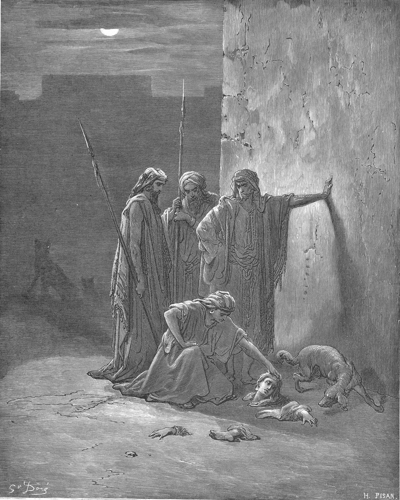

2 Kings 9 — The Mister Translation

2 Kings 9:35. The engraving shows the burial party at the wall, with what the dogs left of Jezebel; the verse names only the skull, the feet and the palms of the hands, and the picture adds the dog and the night.

Translator's Notes — verse by verse
⚠ “Gird up your loins, and take this flask of oil”. “Gird up your loins” (chagor motneykha) stands in two verses of the Hebrew Bible, both Elisha’s: to Gehazi on the way to the dead boy (2 Kings 4:29, now on these pages) and here. Rashi says every girding of the loins is haste and might, because the errand is dangerous; Radak says it is so that he may go quickly and come back quickly while Joram is away healing in Jezreel, and he reads “do not wait” (verse 3) the same way. The NIV has “Tuck your cloak into your belt”. “The flask of oil” (pak ha-shemen) stands in three verses of the Hebrew Bible: Samuel’s anointing of Saul (1 Samuel 10:1, now on these pages) and verses 1 and 3 here. The KJV has “box of oil”, the ASV and the TLB “vial”, the Douay “little bottle”, and the NIV and the NWT 1984 “flask”. Solomon, by contrast, is anointed from “the horn of oil” (1 Kings 1:39, now on these pages). Radak reports that the rabbis drew the line between the two vessels: the kingships of Saul and Jehu, anointed from a flask, did not last, and those of David and Solomon, anointed from a horn, did.
⭐ “Chamber within chamber”. Jehu is to be taken from among his brothers and brought in “chamber within chamber” (cheder be-cheder), which stands in four verses of the Hebrew Bible: Ben-hadad’s hiding place (1 Kings 20:30) and the place Micaiah says Zedekiah will run to (1 Kings 22:25), both now on these pages; the retelling at 2 Chronicles 18:24; and here. The KJV and the ASV have “an inner chamber”, the NIV “an inner room”, and the NWT 1984 “the innermost chamber”. Radak glosses it as a room inside a room, and uses these words, with “the house”, “the top of the steps” and “the city”, to argue that Israel’s army was inside Ramoth-gilead and Aram outside. The Greek has the same pair, tameion en tameiō. Josephus has the young man find Jehu sitting among the commanders and lead him into the storeroom (Antiquities 9.107–108).
⚠ “The young man, the young man who was the prophet”. The doubled phrase ha-na‘ar ha-na‘ar ha-navi stands in one verse of the Hebrew Bible. The KJV and the ASV keep the repetition: “the young man, even the young man the prophet”. The NIV has “the young prophet”, the Douay “the young man, the servant of the prophet”, the Geneva “the servant of the Prophet”, and the NWT 1984 “the attendant, the prophet’s attendant”. Rashi takes the second “young man” to explain the first: the disciple of Elisha, and he says it was Jonah son of Amittai; Radak writes only that “they said” it was Jonah. Nothing in the chapter names him. A Jonah son of Amittai is a prophet in Jonah 1:1 (now on these pages) and in 2 Kings 14:25.
⭐ “I have a word for you, O commander”. The young man finds the commanders of the army sitting, and Jehu answers “For which of us all?” The KJV and the ASV have “captain”, the NIV “commander”, the Douay “prince”, and the NWT 1984 “chief”. He is anointed indoors, and what he is told is addressed to “the people of Jehovah, over Israel”. At 1 Kings 19:16 (now on these pages) Jehovah told Elijah to anoint Jehu son of Nimshi; this chapter does not say Elijah did, and the one who does it is a young man sent by Elisha. Josephus has him sent “in the manner of flight”, so that he could leave without being seen (Antiquities 9.106), and calls the oil “the holy oil”.
⭐ “I will avenge the blood of my servants the prophets”. The charge is the one Elijah heard at 1 Kings 21:21–23 (now on these pages), now given to the man who will carry it out: strike the house of Ahab, “your master”, and avenge the prophets’ blood “from the hand of Jezebel”. The prophets she cut off are at 1 Kings 18:4 (now on these pages). “Anyone who urinates against the wall” (mashtin be-qir) stands in six verses of the Hebrew Bible, and it is a formula for the males of a house: Nabal’s men (1 Samuel 25:22), Jeroboam’s house (1 Kings 14:10), Baasha’s (1 Kings 16:11), Ahab’s at 1 Kings 21:21, all now on these pages, and here. “Shut up or set free” (atsur ve-azuv) stands in four verses of the Hebrew Bible, the three of those and Deuteronomy 32:36. The KJV and the Douay keep “him that pisseth against the wall”, the ASV has “every man-child”, the NIV “every last male”, the TLB “every male”, and the NWT 1984 “anyone urinating against a wall”. The house is made “like the house of Jeroboam son of Nebat and like the house of Baasha son of Ahijah”, word for word as at 1 Kings 21:22. The Greek adds, after “the hand of Jezebel”, “and from the hand of the whole house of Ahab”.
⭐ “In the plot of Jezreel”. “In the plot of Jezreel” (be-cheleq Yizre‘el) stands in three verses of the Hebrew Bible, here and at verses 36 and 37. Elijah’s word at 1 Kings 21:23 (now on these pages) has chel, “rampart”, one letter shorter, and this is the form Jehu himself quotes. The KJV and the ASV have “the portion of Jezreel”, the NIV “the plot of ground at Jezreel”, the Douay “the field of Jezrahel”, and the NWT 1984 “the tract of land at Jezreel”. Radak, at verse 36, says this plot opened onto Naboth’s vineyard, because the vineyard was beside Ahab’s palace. On the burial, Radak says that when they went to bury her they found only the skull and the palms of the hands, and the bones were not buried. “And he opened the door and fled.”
⚠ “Why did this madman come to you?” The commanders ask at once, “Is it peace?”, and call the young man ha-meshugga. Forms of the word meshugga stand in five verses of the Hebrew Bible: Deuteronomy 28:34, David before Achish (1 Samuel 21:16), here, Jeremiah 29:26, all now on these pages, and Hosea 9:7. The KJV has “this mad fellow”, the NIV “this maniac”, the TLB “that crazy fellow”, the Douay “this mad man”, and the NWT 1984 “this crazy man”. Rashi reads “You know the man” as: you recognize that he is insane. Radak says a prophet in the act of prophesying could behave like a madman, and that Israelites whose heart was with the Baal called Jehovah’s prophet mad as an insult. The Greek has ho epilēptos, “the seized one”. Jehu answers: “You know the man and his talk.” The KJV has “his communication”, the ASV “what his talk was”, the NIV “the sort of things he says”, and the NWT 1984 “his sort of talk”. Radak hears Jehu deflecting: he knows the man’s words, and the man told him nothing of substance. Josephus has Jehu say they have guessed right, for the words were a madman’s (Antiquities 9.110).
⭐ “A lie! Tell us now”, and the top of the steps. They answer sheqer. The KJV, the ASV and the Douay have “It is false”, the NIV “That’s not true!”, and the NWT 1984 “It is false!” Rashi hears: what you are saying is a lie; you are hiding what he said. When Jehu tells them, they put their garments under him “on the top of the steps” (el gerem ha-ma‘alot), a phrase that stands in one verse of the Hebrew Bible. The KJV and the ASV have “the top of the stairs”, the NIV and the NWT 1984 “the bare steps”, and the Douay “after the manner of a judgment seat”. Rashi sets down the Targum’s “step of the hours”, a stair that marks the hours of the day like a dial, and says gerem is a notch; Radak takes it as the highest step. The Greek leaves the word untranslated, garem. They blow the ram’s horn, as at Solomon’s anointing (1 Kings 1:39), and cry “Jehu has become king!”, the cry Absalom’s agents were to raise at the sound of the horn, “Absalom has become king in Hebron” (2 Samuel 15:10); both are now on these pages. Josephus has each man strip off his cloak and spread it, and the horns sound (Antiquities 9.111).
⚠ “Jehu conspired against Joram”. The form wa-yitqasher, “and he conspired”, stands in one verse of the Hebrew Bible; the noun qesher is how thrones in Kings change hands, and Zimri “conspired” in the same way at 1 Kings 16:9, now on these pages. The Greek has synestraphē. The verse gives the setting in a clause: Joram and all Israel had been guarding Ramoth-gilead against Hazael, and (verse 15) Joram had gone back to Jezreel to be healed of the wounds the Arameans gave him, the same wounds as at 2 Kings 8:28–29 (now on these pages), where the place of the wounding is called Ramah. The Greek of verse 16 adds that the wounds were from arrows, and that “he” is “mighty, a man of strength”.
⭐ “If it is your soul’s wish”. Jehu asks the commanders to let no fugitive out of the city to carry the news. The KJV has “If it be your minds”, the ASV “If this be your mind”, the NIV “If you desire to make me king”, the TLB “Since you want me to be king”, the Douay “If it please you”, and the NWT 1984 “If your soul agrees”. The Hebrew is “if there is your soul”, and Radak reads it as: if you wish me to reign, as you are showing, help me in this. Rashi has only “that I reign”. The last word of the verse is one of three written and read pairs in the chapter: lagid is written and lehagid, “to tell”, is read. Radak says both are correct, since the infinitive is found without its he in other places. The other two pairs are at verses 33 and 37.
⭐ “I see a multitude”. The watchman on the tower sees the shifat of Jehu. The word stands in five verses of the Hebrew Bible, here twice in one verse; the others are Job 22:11 and 38:34, Isaiah 60:6 and Ezekiel 26:10, where it is an abundance of water, of camels and of horses. The KJV and the ASV have “company”, the NIV “troops”, the Douay “troop”, and the NWT 1984 “heaving mass”. Rashi glosses it as “troop”. The Greek has “the dust of Jehu” (ton koniorton Iou) and “I see dust”. Joram says “Take a rider”, the NIV has “Get a horseman”, the KJV “Take an horseman”, the NWT 1984 “a cavalryman”, and the Douay “a chariot”. The Hebrew of verses 18 and 19 has a different phrase, “the rider of a horse”. The watchman who names a runner by his running is at 2 Samuel 18:24–27 (now on these pages), where the first is “like the running of Ahimaaz”.
⚠ “Is it peace?” and “What have you to do with peace?” The question ha-shalom is the one the Shunammite is sent (2 Kings 4:26) and Naaman asks Gehazi (2 Kings 5:21), both now on these pages, where this translation has “Is it well?”. Here Jehu’s answer turns on the noun, so “peace” stays. “What have you to do with peace?” (mah lekha u-le-shalom) stands in two verses of the Hebrew Bible, 18 and 19. The KJV and the ASV have “turn thee behind me”, the NIV “Fall in behind me”, the TLB “What do you know about peace? Get behind me!”, the Douay “go behind and follow me”, and the NWT 1984 “Get around to my rear!” Josephus has Jehu tell the first rider to mind nothing but follow him (Antiquities 9.115).
⭐ “He drives in madness”. The watchman knows the driver. The noun shiggaon, “madness”, stands in three verses of the Hebrew Bible: Deuteronomy 28:28 (now on these pages), here, and Zechariah 12:4. The KJV and the ASV have “he driveth furiously”, the NIV “he drives like a maniac”, and the NWT 1984 “it is with madness that he drives”. Radak says Jehu drives his chariot as one does in a frenzy. He is “Jehu son of Nimshi”, as at 1 Kings 19:16 (now on these pages); “Jehu son of Nimshi” stands in three verses of the Hebrew Bible, with 2 Chronicles 22:7, while verses 2 and 14 here say “son of Jehoshaphat son of Nimshi”. So Nimshi is his grandfather, and the NWT 1984 has “Jehu the grandson of Nimshi” here.
⭐ “What peace, so long as the promiscuity of Jezebel your mother?” The two kings find Jehu “in the plot of Naboth the Jezreelite”, the field of 1 Kings 21 (now on these pages). Jehu’s answer to “Is it peace, Jehu?” blames the mother. Forms of the plural zenunim stand in ten verses of the Hebrew Bible, as in Genesis 38:24 and Hosea 1:2, where this translation has “promiscuity” too. The “sorceries” beside it come together with it again at Nahum 3:4, said of a city. The KJV, the ASV and the Geneva have “whoredoms”, the Douay and the NWT 1984 “fornications”, the NIV “idolatry and witchcraft”, and the TLB “the evils of your mother Jezebel”. Radak reads: what peace can there be, up to the harlotries of your mother? Peace does not suit her or you. Josephus has Jehu abuse him so bitterly that he calls his mother a sorceress (Antiquities 9.118).
⚠ “Treachery!” and “filled his hand with the bow”. Joram “turned his hands”: the KJV and the ASV keep this, the Douay has “turned his hand”, the NIV “turned about”, and the TLB “reined the chariot horses around”. His cry is mirmah. Jehu “filled his hand with the bow”: the NWT 1984 keeps this, “filled his hand with a bow”, while the KJV has “drew a bow with his full strength”, the ASV “drew his bow with his full strength”, and the NIV “drew his bow”. Radak says he drew the bow with all his strength. The arrow goes “between his arms”, where the NIV and the TLB have “between the shoulders”, and the arrow is chetsi, the word for Jonathan’s single arrow at 1 Samuel 20:36–37 (now on these pages). “And he sank down in his chariot.” Josephus has him fall on his knee and die at once (Antiquities 9.119).
⭐ “Remember… when Jehovah lifted this burden against him”. Jehu orders Bidkar, “his officer” (shalish, the word of 2 Kings 7:2, now on these pages), to throw the body in the plot. The KJV, the ASV and the Douay have “captain”, the NIV “chariot officer”, the TLB “assistant”, and the NWT 1984 “adjutant”. Radak notes that the word is written with a he where a vav is expected. Josephus makes Bidkar “the commander of the third division” and has Jehu say that he heard the prophecy from behind Ahab’s chariot (Antiquities 9.119–120). The verse has the two men “riding in pairs”, which the NWT 1984 turns into “riding teams” and the NIV into “riding together in chariots”; Radak says it means either in one chariot or side by side, like a yoke of oxen. The oracle was “lifted”: the KJV and the ASV have “laid this burden”, the NIV “spoke this prophecy”, the TLB “revealed this prophecy”, and the NWT 1984 “lifted up this pronouncement”.
⚠ “The blood of Naboth and the blood of his sons”. “I saw yesterday” (ra’iti emesh) stands in one verse of the Hebrew Bible. Elijah’s word at 1 Kings 21:19 (now on these pages) speaks of where the dogs licked Naboth’s blood and says nothing of his sons; Jehu’s fuller form has both, and the payment “in this plot”. Radak lists three readings of “his sons”: they were killed with him; they were sons yet to be born; or, as his father taught, the blood of his sons is the inheritance taken from them. He takes “yesterday” plainly: the word came to Ahab the day after Naboth’s death, in the vineyard. The NIV has “Yesterday I saw the blood of Naboth and the blood of his sons”, the Douay “If I do not requite thee in this field”, and the NWT 1984 “Certainly the blood of Naboth and the blood of his sons I saw yesterday”. Elijah had been told the evil would come in the son’s days (1 Kings 21:29), and the son’s body is the one thrown in the plot.
⭐ “Him also! Strike him in the chariot”. Ahaziah flees “by the way of the garden house”, and Jehu’s order has no verb to say it was carried out: all seven versions on the English shelf supply one. The KJV adds “And they did so”, the Geneva “and they smote him”, the ASV “and they smote him”, the NIV “They wounded him”, the TLB “So they shot him”, the Douay “And they struck him”, and the NWT 1984 “So they struck him down”. Radak says the verse leaves out “and they struck him” and trusts the reader, as scripture often does. The place is “the ascent of Gur, which is by Ibleam”, and the Greek has Gai, “which is Ibleam”. Rashi and Radak both meet 2 Chronicles 22:9, where Ahaziah is found hiding in Samaria and brought to Jehu: Rashi gives the rabbis’ reading, in which Ahaziah went to Samaria to hide from Judah’s officers while he did idolatrous things, and Radak reads “he died” at Megiddo as being paralysed, carried to hide in Samaria, and brought to Jehu at Jezreel to be killed. Josephus has him wounded by an arrow on a slope, leaving his chariot for a horse, healed for a little while at Megiddo, and dying of the wound (Antiquities 9.121). Here “his servants made him ride to Jerusalem”, where the Greek adds “on the chariot”.
⚠ “In the eleventh year”. At 2 Kings 8:25 (now on these pages) Ahaziah began to reign in Joram’s twelfth year; here it is the eleventh. Rashi’s answer is that he reigned one year in his father’s lifetime, when his father was afflicted with sickness, and he counts the rest from 2 Chronicles 21 and 22. Radak says the count comes to the thirteenth year, that two of the years were partial, and that the verse recounts his reign at his death to show it was cut short. The Greek of this verse has “eleventh”.
⭐ “She put kohl on her eyes… and looked down through the window”. “In kohl” (be-fukh) stands in three verses of the Hebrew Bible: here, Isaiah 54:11, where stones are set in it, and Jeremiah 4:30, where it enlarges the eyes of one who dresses up for lovers who will despise her. The KJV and the Geneva have “painted her face”, the ASV “painted her eyes”, the NIV “put on eye makeup”, the TLB “painted her eyelids”, the Douay “painted her face with stibic stone”, and the NWT 1984 “paint her eyes with black paint”. For “made her head beautiful” the KJV and the Geneva have “tired her head”, the ASV “attired her head”, the NIV “arranged her hair”, and the NWT 1984 “do her head up beautifully”. Rashi, citing the Targum, says she did it to find favour in Jehu’s eyes so that he would marry her; Radak says to find favour so that he would not kill her. “Through the window” (be‘ad ha-chalon) stands in seven verses of the Hebrew Bible: Abimelech watching Isaac and Rebekah (Genesis 26:8, now on these pages), Rahab letting the spies down (Joshua 2:15), Sisera’s mother (Judges 5:28), Michal letting David down (1 Samuel 19:12) and looking down on him (2 Samuel 6:16), the same look at 1 Chronicles 15:29, and here. Josephus has her stand on the tower (Antiquities 9.122).
⚠ “Is it peace, Zimri, murderer of his master?” The Hebrew has the name with no “to” or “for” before it: ha-shalom Zimri horeg adonav. Some versions take it as an address. The ASV has “Is it peace, thou Zimri, thy master’s murderer?”, the NIV “Have you come in peace, you Zimri, you murderer of your master?”, and the TLB “How are you today, you murderer! You son of a Zimri who murdered his master!” Others take it as a question about Zimri: the KJV has “Had Zimri peace, who slew his master?”, the Geneva “Had Zimri peace, which slew his master?”, the Douay “Can there be peace for Zambri, that hath killed his master?”, and the NWT 1984 “Did it go all right with Zimri the killer of his lord?” We keep the address, which makes it the same question Joram asked three times. Rashi hears: it is nothing new if you killed your master, for Zimri too killed Elah son of Baasha; Radak says she named him so because Zimri killed Elah his lord and Jehu has killed his. Zimri’s killing of Elah is at 1 Kings 16:9–10 (now on these pages). The Greek has the same name, Zambri.
⭐ “Who is with me? Who?” and “Let her drop!” “Who is with me? Who?” (mi iti mi) stands in one verse of the Hebrew Bible. Rashi hears: who among you will come to help me; Radak, who is there in my help. The KJV, the ASV, the NIV and the Geneva have “Who is on my side?”, and the NWT 1984 “Who is with me?” The KJV, the ASV, the NIV and the TLB call the two or three who look down “eunuchs”, as the Geneva does with “of her Eunuchs”; the NWT 1984 has “court officials”, as at 2 Kings 8:6 (now on these pages). The Douay has “Who is this?”, and “two or three eunuchs bowed down to him”. The Greek has “Who are you? Come down with me”, and “two eunuchs”, and Josephus follows it (Antiquities 9.122). For the order itself the KJV, the ASV, the NIV and the TLB have “Throw her down”, the Douay “Throw her down headlong”, the Geneva “Cast her down”, and the NWT 1984 “Let her drop!” The verb is the one that lets the oxen slip at 2 Samuel 6:6 (now on these pages). It is the second written and read pair: shamtuha is written with a masculine ending and read with a feminine one. Radak finds in the written form a hint at Naboth, whom she commanded to be cast out and stoned. Radak also says her blood was seen on the wall for days, and that “he trampled her” means Jehu with his horse. The Greek has “Roll her”, and “they trampled her”.
⭐ “The skull and the feet and the palms of the hands”. Jehu goes in, eats and drinks, and says: “Attend, please, to this cursed woman and bury her, for she is a king’s daughter.” “For she is a king’s daughter” stands in one verse of the Hebrew Bible. Radak says that though she was a king’s daughter of the nations, honour is due to one honoured among her people, and he does not rest it on her husband’s honour, since she caused his death; Josephus gives the reason “because she was of kings” (Antiquities 9.123). “The palms of the hands” (kappot ha-yadayim) stands in one verse of the Hebrew Bible. The KJV, the ASV and the Geneva have “the palms of her hands”, the NIV and the TLB “her hands”, the Douay “the extremities of her hands”, and the NWT 1984 “the palms of the hands”. Josephus has only “the extremities” (Antiquities 9.124). The Greek has “the traces of the hands”. Rashi and Radak both carry the rabbis’ reading: the feet were spared because she danced before bridegrooms (Rashi) or brides (Radak), the hands because she clapped before them, the skull because she shook her head. Radak adds that “none to bury her” (verse 10) then means that most of her body was eaten before it could be brought to a grave.
⭐ “Like dung on the face of the field”. Jehu names the word: “which he spoke by the hand of his servant Elijah the Tishbite”. “By the hand of his servant Elijah” stands in two verses of the Hebrew Bible, here and at 2 Kings 10:10. The corpse is domen, dung spread on a field; it comes again in Jeremiah 25:33 (now on these pages), where the slain of Jehovah “will be dung on the face of the ground”, and in Jeremiah 8:2 and 16:4 and Psalm 83:11. The word of 1 Kings 14:10 is a different one, galal. The KJV and the ASV have “dung”, the NIV “dung on the ground”, the TLB “manure”, the NWT 1984 “manure”, and the Douay “dung… so that they who pass by shall say: Is this that same Jezabel?” Radak gives the Targum’s “like dung scattered on the face of the field”. The last pair, at the start of the verse, is we-hayt written and we-hayetah read, “and it shall be”; Radak says it is written without its he, as we-asit, “and you shall make”, is. The verse ends on the name: “so that they shall not say: This is Jezebel.”
Patterns worth carrying forward
Where this translation keeps the words exact and distinct: “gird up your loins”, as at 4:29; “the flask of oil”, as at 1 Samuel 10:1, against “the horn of oil” at 1 Kings 1:39; “chamber within chamber”, as at 1 Kings 20:30 and 22:25; “anyone who urinates against the wall, whether shut up or set free”, as at 1 Kings 14:10 and 21:21; “the plot of Jezreel”, against “the rampart of Jezreel” at 1 Kings 21:23; “this madman”; “Is it peace?” throughout, where 4:26 and 5:21 have “Is it well?”; “What have you to do with peace?”; “a multitude”; “a rider” (verse 17) and “the horse rider” (verses 18–19); “promiscuity”, as at Hosea 1:2; “Treachery”; “filled his hand with the bow”; “his officer”, as at 7:2; “this burden”; “court officials”, as at 8:6; “Let her drop!”; “the palms of the hands”; and “dung”. “Joram” is kept for the king of Israel and “Jehoram” for the king of Judah, though the Hebrew of this chapter prints the king of Israel both ways, Joram at verses 14 and 16 and Jehoram at verses 15, 17 and 21–24. The written and read Hebrew are recorded at verses 15, 33 and 37.
Echoes paid. Jehovah’s word to Elijah to anoint Jehu (1 Kings 19:16); the house of Ahab like the houses of Jeroboam and Baasha (1 Kings 21:21–22; 14:10; 16:11); the dogs and Jezebel (1 Kings 21:23); Naboth’s plot (1 Kings 21); the prophets cut off (1 Kings 18:4); Zimri (1 Kings 16:9–10); the flask for Saul and the horn for Solomon (1 Samuel 10:1; 1 Kings 1:39); Absalom’s cry (2 Samuel 15:10); “chamber within chamber” (1 Kings 20:30; 22:25); the madman (1 Samuel 21:16; Jeremiah 29:26); Elisha’s loins girded (2 Kings 4:29); “Is it well?” (2 Kings 4:26; 5:21); the officer of 7:2; the court official of 8:6; Joram’s wounds at Ramoth-gilead (2 Kings 8:28–29); Ahaziah’s accession year (2 Kings 8:25); the watchman who knows a runner (2 Samuel 18:24–27); the window of Sisera’s mother and of Michal (Judges 5:28; 2 Samuel 6:16; 1 Samuel 19:12); Jonathan’s arrow (1 Samuel 20:20); and the oxen that slip (2 Samuel 6:6).
Echoes planted. Jehu’s letters to Samaria about Ahab’s sons (2 Kings 10:1); “by the hand of his servant Elijah” again (2 Kings 10:10); Athaliah, who destroys the royal seed when her son is dead (2 Kings 11:1); Jonah son of Amittai (2 Kings 14:25); the Chronicles’ tellings of Micaiah and of Ahaziah’s hiding (2 Chronicles 18:24; 22:9); the madman of Hosea 9:7 and the madness of Zechariah 12:4; kohl in Isaiah 54:11 and Jeremiah 4:30; and dung on the ground in Jeremiah 8:2 and 16:4 and Psalm 83:11. None of these is translated here yet.
Next in this book: 2 Kings 10 — Jehu writes to Samaria about Ahab’s seventy sons, meets Jehonadab son of Rechab, and gathers the worshippers of Baal into the house of Baal.